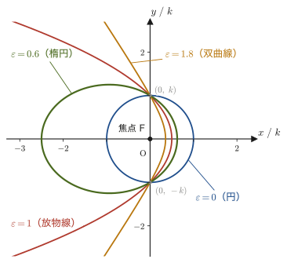

第6章極座標で見る運動と2次曲線
ブランコの支点から見た人の運動，レコード盤の上の一点の運動，そして太陽のまわりを回る惑星の運動——これらはどれも，$xy$ の直交座標より，原点からの距離 $r$ と角度 $\theta$ で位置を表す極座標（polar coordinates）の方が扱いやすい．第3章ではすでに極座標の基底ベクトル $\bm{e}_r,\bm{e}_\theta$ を導入し，接線・法線成分による加速度の表し方を学んだ．本章では同じ極座標を舞台に，まったく別の道具（回転行列によるベクトル成分の変換）を使って，速度・加速度を $r,\theta$ とその微分だけで書き表す方法を，行間を一切飛ばさずに追いかける．
後半では話題を変え，極座標で $r=\dfrac{k}{1+\varepsilon\cos\theta}$ という形に書ける曲線——円錐曲線（conic sections，2次曲線）——を扱う．高校数学（AD 01）では円・楕円・放物線・双曲線をそれぞれ独立な図形として標準形（$x^2/a^2+y^2/b^2=1$ など）で学んだはずだが，実はこの4種類はすべて，原点（焦点の1つ）からの距離 $r$ を上の1つの式で表したときの，ただ1つのパラメータ $\varepsilon$（離心率，eccentricity）の違いにすぎない．この事実は，一見無関係に見える「極座標での運動の記述」と「2次曲線の分類」という2つの話題を，本章で続けて扱う理由でもある——第8章で太陽のまわりを回る惑星の軌道を求めると，その軌道はまさにこの $r=k/(1+\varepsilon\cos\theta)$ の形になり，惑星が楕円軌道を描くこと（ケプラーの第1法則）が導かれる．本章はその準備でもある．
なお，本章の前半（6.1・6.2節）と同じ内容は，姉妹編「大学数学（AD 02）」第16章16.6節でも扱われている．AD 02 でも本章と同じく，$x=r\cos\theta,\ y=r\sin\theta$ を時間で微分し，回転行列で極座標成分 $(V_r,V_\theta)$ に変換して結果を導いている（記号は大文字の $V$，$A$ を使っている）ので，読み比べるとよい．本章では，その結果を「$\bm{e}_r,\bm{e}_\theta$ への射影」という見方でも確かめ，基底ベクトルの時間微分 $\dot{\bm e}_r=\dot\theta\bm e_\theta$ などを使う別証明は演習6.4で扱う．
- 直交座標の速度成分 $(v_x,v_y)$ と極座標の速度成分 $(v_r,v_\theta)$ を，回転行列によって相互に変換する方法と，そこから $v_r=\dot r,\ v_\theta=r\dot\theta$ が導かれること
- 同じ方法を加速度に適用し，$a_r=\ddot r-r\dot\theta^2,\ a_\theta=2\dot r\dot\theta+r\ddot\theta=\dfrac1r\diff{(r^2\dot\theta)}{t}$ を導出し，各項（動径方向の伸縮，向心成分，角度方向の項）の物理的な意味を理解すること．$a_r\neq\ddot r$ に注意すること
- 基底ベクトル $\bm{e}_r,\bm{e}_\theta$ を回転行列の列ベクトルとして読み取る方法
- 極座標の2次曲線の一般式 $r=k/(1+\varepsilon\cos\theta)$ と，離心率 $\varepsilon$ による円・楕円・放物線・双曲線の分類（定理6.1）を，直交座標の標準形への変換で証明すること
- 極座標での加速度の角度成分が角運動量 $L=mr^2\dot\theta$ の保存則（面積速度一定，ケプラーの第2法則）とどうつながるかを予想すること（第8章への準備）
もとにしたノート：望月泰英『物理学ノート 力学』 pp. 16–18．
6.1 極座標での速度
第3章で見たとおり，平面上の点の位置は，直交座標 $(x,y)$ の代わりに，原点からの距離 $r\ [\mathrm{m}]$ と，$x$ 軸から測った角 $\theta\ [\mathrm{rad}]$ の組 $(r,\theta)$（極座標）で表すこともできる．このとき，点の位置における2つの単位ベクトル $\bm{e}_r$（動径方向，原点から点へ向かう向き）と $\bm{e}_\theta$（角度方向，$\theta$ が増える向き，$\bm{e}_r$ と直交）を考えると，これらは直交座標の基底ベクトル $\bm{e}_x,\bm{e}_y$ を原点のまわりに角 $\theta$ だけ回転させたものになっている．本節では，速度ベクトル $\bm{v}$ を，この $\bm{e}_r,\bm{e}_\theta$ を使って表す方法——すなわち，速度の直交座標成分 $(v_x,v_y)$ と極座標成分 $(v_r,v_\theta)$ の関係——を，回転行列を使って導く．
6.1.1 回転行列による成分の変換
導出（前半）：直交座標成分と極座標成分の変換（式Ⓐ）
(i) 直交座標成分から極座標成分へ． $\bm{e}_r,\bm{e}_\theta$ は $\bm{e}_x,\bm{e}_y$ を角 $\theta$ だけ回転させたものなので，ある固定されたベクトル（ここでは速度 $\bm v$）の「$(r,\theta)$ 系での成分」を「$(x,y)$ 系での成分」から求めるには，軸の回転とは逆向きの回転（角 $-\theta$ の回転）を成分に施せばよい（大学数学 第16章 16.6節で同じ議論をしている．軸を $+\theta$ 回転させると，同じベクトルの成分は $-\theta$ 回転して見える，という関係である．図6.1）．角 $\varphi$ だけの回転を表す行列は $\begin{bmatrix}\cos\varphi&-\sin\varphi\\\sin\varphi&\cos\varphi\end{bmatrix}$（大学数学 第16章 定理16.1の平面版）だから，$\varphi=-\theta$ を代入すると，
$$ \begin{bmatrix}\cos(-\theta) & -\sin(-\theta)\\ \sin(-\theta) & \cos(-\theta)\end{bmatrix}\begin{bmatrix}v_x\\ v_y\end{bmatrix}=\begin{bmatrix}v_r\\ v_\theta\end{bmatrix} $$となる．余弦は偶関数（$\cos(-\theta)=\cos\theta$），正弦は奇関数（$\sin(-\theta)=-\sin\theta$）なので，これを整理すると，
\begin{equation} \begin{bmatrix}\cos\theta & \sin\theta\\ -\sin\theta & \cos\theta\end{bmatrix}\begin{bmatrix}v_x\\ v_y\end{bmatrix}=\begin{bmatrix}v_r\\ v_\theta\end{bmatrix} \label{eq:6-vpolar-raw} \end{equation}が得られる．
直接の確認（内積による）． 「$-\theta$ 回転」という主張を，成分を直接計算して確かめておこう．$v_r$ は $\bm v$ の $\bm e_r$ 方向の成分，$v_\theta$ は $\bm e_\theta$ 方向の成分なので，内積で $v_r=\bm v\cdot\bm e_r$，$v_\theta=\bm v\cdot\bm e_\theta$ と書ける．第3章 3.2節で見たとおり $\bm e_r=(\cos\theta,\ \sin\theta)$，$\bm e_\theta=(-\sin\theta,\ \cos\theta)$（$\bm e_x,\bm e_y$ 方向の成分）だから，
$$ v_r=\bm v\cdot\bm e_r=v_x\cos\theta+v_y\sin\theta,\qquad v_\theta=\bm v\cdot\bm e_\theta=-v_x\sin\theta+v_y\cos\theta $$となり，これは式 \eqref{eq:6-vpolar-raw} の左辺の行列を掛け算して得られる1行目・2行目とちょうど同じである．数値でも確かめよう．$\theta=90^\circ$ のとき $\bm e_r=\bm e_y$，$\bm e_\theta=-\bm e_x$ であるから，$\bm v=\bm e_x$（$v_x=1,\ v_y=0$）は $\bm v=-\bm e_\theta$ にあたり，$(v_r,v_\theta)=(0,-1)$ になるはずである．実際に式 \eqref{eq:6-vpolar-raw} に代入すると，$\begin{bmatrix}\cos90^\circ&\sin90^\circ\\-\sin90^\circ&\cos90^\circ\end{bmatrix}\begin{bmatrix}1\\0\end{bmatrix}=\begin{bmatrix}0&1\\-1&0\end{bmatrix}\begin{bmatrix}1\\0\end{bmatrix}=\begin{bmatrix}0\\-1\end{bmatrix}$ となって一致する．
(ii) 逆に極座標成分から直交座標成分へ（式Ⓐ）． 式 \eqref{eq:6-vpolar-raw} の左辺にかかっている行列を $M=\begin{bmatrix}\cos\theta&\sin\theta\\-\sin\theta&\cos\theta\end{bmatrix}$ とおく．$M$ は「角 $\theta$ の回転行列 $R(\theta)=\begin{bmatrix}\cos\theta&-\sin\theta\\\sin\theta&\cos\theta\end{bmatrix}$」の転置 $R(\theta)^{\mathrm T}$（行列 $A$ の行と列を入れ替えた行列を $A^{\mathrm T}$ と書き，$A$ の転置という．$R(\theta)$ では1行目 $(\cos\theta,\,-\sin\theta)$ が1列目に，2行目 $(\sin\theta,\,\cos\theta)$ が2列目になる）に等しいことに注意する．直接計算すると，
$$ R(\theta)\,M=\begin{bmatrix}\cos\theta&-\sin\theta\\\sin\theta&\cos\theta\end{bmatrix}\begin{bmatrix}\cos\theta&\sin\theta\\-\sin\theta&\cos\theta\end{bmatrix} =\begin{bmatrix}\cos^2\theta+\sin^2\theta & \cos\theta\sin\theta-\sin\theta\cos\theta\\ \sin\theta\cos\theta-\cos\theta\sin\theta & \sin^2\theta+\cos^2\theta\end{bmatrix} =\begin{bmatrix}1&0\\0&1\end{bmatrix} $$（対角成分は $\cos^2\theta+\sin^2\theta=1$，非対角成分は打ち消し合って $0$ になる）．つまり $R(\theta)M=I$（単位行列）であり，$M$ は $R(\theta)$ の逆行列でもある（$R(\theta)$ は直交行列——転置が逆行列に等しい行列——であることの確認そのものである．大学数学 第8章 8.1節の行列の積の計算を参照）．これは，$R(\theta)^{\mathrm T}=R(\theta)^{-1}=R(-\theta)$（逆行列は逆向きの回転）と書けて，$M$ に現れる「$-\theta$ 回転」の意味とも一致している．そこで式 \eqref{eq:6-vpolar-raw} の両辺に，左から $R(\theta)$ をかけると，
$$ R(\theta)M\begin{bmatrix}v_x\\v_y\end{bmatrix}=R(\theta)\begin{bmatrix}v_r\\v_\theta\end{bmatrix} \qquad\Longrightarrow\qquad \begin{bmatrix}v_x\\v_y\end{bmatrix}=R(\theta)\begin{bmatrix}v_r\\v_\theta\end{bmatrix} $$（左辺は $R(\theta)M=I$ より $\begin{bmatrix}v_x\\v_y\end{bmatrix}$ そのものになる）．書き下すと，
\begin{equation} \begin{bmatrix}\cos\theta & -\sin\theta\\ \sin\theta & \cos\theta\end{bmatrix}\begin{bmatrix}v_r\\ v_\theta\end{bmatrix}=\begin{bmatrix}v_x\\ v_y\end{bmatrix} \qquad \cdots\ \text{Ⓐ} \label{eq:6-vA} \end{equation}である．
6.1.2 直接微分による速度と公式6.1
導出（後半）：直接微分（式Ⓑ）とⒶ，Ⓑの比較
(iii) 直接微分して求める $v_x,v_y$（式Ⓑ）． 運動する点では，$r$ も $\theta$ も時刻 $t$ の関数 $r(t),\ \theta(t)$ である（点が動けば，原点からの距離も向きも時間とともに変わる）．一方，$x=r\cos\theta,\ y=r\sin\theta$ をそのまま時刻 $t$ で微分すれば，$v_x,v_y$ を $r,\theta$ とその微分だけで表せる．積の微分公式を使うと，
$$ v_x=\diff{x}{t}=\frac{\dd}{\dd t}(r\cos\theta)=\dot r\cos\theta+r\cdot\frac{\dd}{\dd t}(\cos\theta)=\dot r\cos\theta-r\dot\theta\sin\theta $$（$\dfrac{\dd}{\dd t}\cos\theta(t)=-\sin\theta\cdot\dot\theta$ は合成関数の微分法（連鎖律）による．$\cos$ を $\theta$ で微分すると $-\sin\theta$，さらに $\theta$ を $t$ で微分すると $\dot\theta$ になる，という2段階の微分である）．同様に，
$$ v_y=\diff{y}{t}=\frac{\dd}{\dd t}(r\sin\theta)=\dot r\sin\theta+r\cdot\frac{\dd}{\dd t}(\sin\theta)=\dot r\sin\theta+r\dot\theta\cos\theta $$である．この2式は，ちょうど回転行列 $R(\theta)$ を列ベクトル $[\dot r,\ r\dot\theta]^{\mathrm T}$ にかけた形にまとめられる：
\begin{equation} \begin{bmatrix}\cos\theta & -\sin\theta\\ \sin\theta & \cos\theta\end{bmatrix}\begin{bmatrix}\dot{r}\\ r\dot{\theta}\end{bmatrix}=\begin{bmatrix}v_x\\ v_y\end{bmatrix} \qquad \cdots\ \text{Ⓑ} \label{eq:6-vB} \end{equation}（実際に右から展開すると，1行目は $\dot r\cos\theta-r\dot\theta\sin\theta=v_x$，2行目は $\dot r\sin\theta+r\dot\theta\cos\theta=v_y$ となり，上の2式と一致する）．
(iv) Ⓐ，Ⓑの比較． 式 \eqref{eq:6-vA}（Ⓐ）と式 \eqref{eq:6-vB}（Ⓑ）は，どちらも「同じ回転行列 $R(\theta)$ を，ある列ベクトルにかけると $[v_x,v_y]^{\mathrm T}$ になる」という形をしている：
$$ R(\theta)\begin{bmatrix}v_r\\v_\theta\end{bmatrix}=\begin{bmatrix}v_x\\v_y\end{bmatrix}=R(\theta)\begin{bmatrix}\dot r\\r\dot\theta\end{bmatrix} $$$R(\theta)$ は (ii) で見たとおり逆行列 $M=R(\theta)^{-1}$ をもつので，両辺に左から $M$ をかけると $R(\theta)$ が消え，
$$ \begin{bmatrix}v_r\\v_\theta\end{bmatrix}=\begin{bmatrix}\dot r\\r\dot\theta\end{bmatrix} $$が得られる．すなわち，
\begin{equation} v_r=\dot r,\qquad v_\theta=r\dot\theta \label{eq:6-vresult} \end{equation}である．
（導出終わり）
公式6.1 極座標での速度
平面上を運動する点の速度ベクトル $\bm v$ は，極座標の基底ベクトルを使って，
\begin{equation} \bm v=\dot r\,\bm e_r+r\dot\theta\,\bm e_\theta \label{eq:6-v-formula} \end{equation}と表される．すなわち，動径方向の成分は $v_r=\dot r$，角度方向の成分は $v_\theta=r\dot\theta$ である．速さは $\abs{\bm v}=\sqrt{\dot r^2+r^2\dot\theta^2}$ である（$\bm e_r\perp\bm e_\theta$ なので三平方の定理）．
次元の確認：$\dot r$ は $\mathrm{m/s}$，$r\dot\theta$ は $\mathrm{m}\times\mathrm{rad/s}$ であり，$\mathrm{rad}$ は無次元（弧の長さ÷半径）なので $\mathrm{m/s}$ である．どちらも速度の単位で，足し合わせて $\bm v$ をつくってよい．
イメージ：$\dot r$ と $r\dot\theta$ は何を表しているか
$\dot r$（アール・ドット，$r$ の時間微分 $\dd r/\dd t$）は，原点からの距離 $r$ が単位時間あたりどれだけ増減するかを表す——原点に対して「近づく・遠ざかる」速さである．一方，$r\dot\theta$ は，半径 $r$ の円周上を角速度 $\dot\theta$（シータ・ドット，$\theta$ の時間微分．高校物理で角速度 $\omega$ と呼んだ量そのもの）で回転したときの速さ $r\omega$ に等しく，「原点のまわりを回る」速さを表す．特に $r$ が一定（$\dot r=0$，純粋な円運動）のときは $\bm v=r\dot\theta\,\bm e_\theta$ だけが残り，高校物理で学んだ「等速円運動の速さは $v=r\omega$，向きは円の接線方向」という結果にちょうど一致する．逆に $\theta$ が一定（角度を変えずに原点から遠ざかる・近づく直線運動）なら $\bm v=\dot r\,\bm e_r$ だけになる．一般の運動では，この2つの効果（動径方向の伸縮と，回転）が同時に起こっている，というのが式 \eqref{eq:6-v-formula} の意味である．
例題6.1 極座標の速度成分から直交座標の速度成分へ
ある時刻に，動径方向の速度成分が $\dot r=2\ \mathrm{m/s}$，角度方向の速度成分が $r\dot\theta=3\ \mathrm{m/s}$ であった．このとき $\theta=\pi/4\ (=45^\circ)$ であったとして，直交座標系での速度成分 $v_x,v_y$ を求めよ．
解答 式Ⓑ（式 \eqref{eq:6-vB}）に $\dot r=2,\ r\dot\theta=3,\ \theta=\pi/4$（$\cos\dfrac\pi4=\sin\dfrac\pi4=\dfrac{\sqrt2}{2}$）を代入すると，
$$ \begin{bmatrix}v_x\\v_y\end{bmatrix}=\begin{bmatrix}\cos\dfrac\pi4 & -\sin\dfrac\pi4\\[4pt] \sin\dfrac\pi4 & \cos\dfrac\pi4\end{bmatrix}\begin{bmatrix}2\\3\end{bmatrix} =\begin{bmatrix}\dfrac{\sqrt2}{2}\times2-\dfrac{\sqrt2}{2}\times3\\[6pt] \dfrac{\sqrt2}{2}\times2+\dfrac{\sqrt2}{2}\times3\end{bmatrix} =\begin{bmatrix}-\dfrac{\sqrt2}{2}\\[4pt] \dfrac{5\sqrt2}{2}\end{bmatrix} $$したがって $v_x=-\dfrac{\sqrt2}{2}\approx-0.707\ \mathrm{m/s}$，$v_y=\dfrac{5\sqrt2}{2}\approx3.54\ \mathrm{m/s}$ である．$v_x$ が負になっているのは，角度方向の成分 $r\dot\theta=3$ の $x$ 方向への寄与（$-r\dot\theta\sin\theta$）が，動径方向の成分 $\dot r=2$ の $x$ 方向への寄与（$\dot r\cos\theta$）より大きいためである．
検算：速さは回転しても変わらないはずである．直交座標成分から $v_x^2+v_y^2=\dfrac12+\dfrac{25}{2}=13\ \mathrm{m^2/s^2}$，極座標成分から $\dot r^2+(r\dot\theta)^2=2^2+3^2=13\ \mathrm{m^2/s^2}$ となり，一致する（$\abs{\bm v}=\sqrt{13}\approx3.61\ \mathrm{m/s}$）．
6.1.3 基底ベクトルの読み取り
この結果は，別の見方をしても確かめられる．速度ベクトル $\bm v$ は，$(x,y)$ 系の基底ベクトルで書いても，$(r,\theta)$ 系の基底ベクトルで書いても同じ $\bm v$ である．基底ベクトルを横に並べた「行ベクトル」$[\bm e_x\ \ \bm e_y]$ と，成分の列ベクトルの積として $\bm v=v_x\bm e_x+v_y\bm e_y$ を書く記法を使うと，$v_x=\dot x,\ v_y=\dot y$ であるから，
$$ \bm v=[\bm e_x\ \ \bm e_y]\begin{bmatrix}\dot x\\ \dot y\end{bmatrix}=[\bm e_r\ \ \bm e_\theta]\begin{bmatrix}\dot r\\ r\dot\theta\end{bmatrix} $$が成り立つ（右の等号が公式6.1の内容である）．ここで式Ⓑ（$[\dot x,\dot y]^{\mathrm T}=[v_x,v_y]^{\mathrm T}=R(\theta)[\dot r,r\dot\theta]^{\mathrm T}$）を左辺に代入すると，
$$ [\bm e_r\ \ \bm e_\theta]\begin{bmatrix}\dot r\\ r\dot\theta\end{bmatrix}=[\bm e_x\ \ \bm e_y]\,R(\theta)\begin{bmatrix}\dot r\\ r\dot\theta\end{bmatrix} $$となる．この関係が $\dot r,\ r\dot\theta$ の値によらずに成り立つためには，基底ベクトルどうしが $[\bm e_r\ \ \bm e_\theta]=[\bm e_x\ \ \bm e_y]\,R(\theta)$ という関係になっていなければならない．すなわち，$\bm e_r,\bm e_\theta$ は，回転行列 $R(\theta)$ の1列目・2列目を，それぞれ $\bm e_x,\bm e_y$ 方向の成分として読み取ったものになっている：
\begin{equation} \bm e_r=\cos\theta\,\bm e_x+\sin\theta\,\bm e_y,\qquad \bm e_\theta=-\sin\theta\,\bm e_x+\cos\theta\,\bm e_y \label{eq:6-basis-vectors} \end{equation}（$R(\theta)$ の1列目 $[\cos\theta,\sin\theta]^{\mathrm T}$ が $\bm e_r$ の成分，2列目 $[-\sin\theta,\cos\theta]^{\mathrm T}$ が $\bm e_\theta$ の成分である）．この結果は，第3章 公式3.2で「$\bm e_r$ は $x$ 軸から角 $\theta$ の向きを指す単位ベクトル，$\bm e_\theta$ はそれをさらに $90^\circ$ 回転させた向き」という幾何学的な議論から導いた式と，ちょうど同じものである——回転行列の列ベクトルを読み取るという今回の代数的な道筋と，角度を直接測る幾何学的な道筋という，まったく異なる2つの方法が同じ結論に至ることが確認できた．具体的な数値での確認は，例題6.2で行う．
例題6.2 基底ベクトルの成分と符号の確認
(1) 式 \eqref{eq:6-vA}（式Ⓐ）の回転行列 $R(\theta)=\begin{bmatrix}\cos\theta&-\sin\theta\\\sin\theta&\cos\theta\end{bmatrix}$ の列ベクトルを読み取ることで，基底ベクトル $\bm e_r,\bm e_\theta$ を直交座標成分で書き下し，これらが互いに直交する単位ベクトルであること（$\bm e_r\cdot\bm e_\theta=0$，$|\bm e_r|=|\bm e_\theta|=1$）を確認せよ．
(2) $\bm e_\theta$ を書き下すとき，符号を取り違えて $\bm e_\theta'=\sin\theta\,\bm e_x-\cos\theta\,\bm e_y$ としてしまった．この誤りは $(1)$ の直交性・単位性の確認では見つからないことを示し，$\theta=0$ と $\theta=\pi/2$ の場合を図形的に考えて誤りを見つけよ．
解答 (1) 本文で述べたとおり，$\bm e_r$ は $R(\theta)$ の1列目 $\begin{bmatrix}\cos\theta\\\sin\theta\end{bmatrix}$，$\bm e_\theta$ は2列目 $\begin{bmatrix}-\sin\theta\\\cos\theta\end{bmatrix}$ をそのまま $\bm e_x,\bm e_y$ 方向の成分として読んだものである：
$$ \bm e_r=(\cos\theta,\ \sin\theta),\qquad \bm e_\theta=(-\sin\theta,\ \cos\theta) $$大きさはそれぞれ，
$$ |\bm e_r|=\sqrt{\cos^2\theta+\sin^2\theta}=\sqrt1=1,\qquad |\bm e_\theta|=\sqrt{(-\sin\theta)^2+\cos^2\theta}=\sqrt{\sin^2\theta+\cos^2\theta}=1 $$となり，どちらも大きさ1の単位ベクトルである．内積は，
$$ \bm e_r\cdot\bm e_\theta=\cos\theta\times(-\sin\theta)+\sin\theta\times\cos\theta=-\sin\theta\cos\theta+\sin\theta\cos\theta=0 $$となり，たしかに直交している．（一般に，回転行列のような直交行列の列ベクトルどうしは，常に互いに直交する単位ベクトルになる——このことが「直交」行列という名前の由来でもある．）
(2) まず，誤った $\bm e_\theta'=(\sin\theta,\ -\cos\theta)$ も，大きさは $\sqrt{\sin^2\theta+\cos^2\theta}=1$，$\bm e_r$ との内積は $\cos\theta\sin\theta-\sin\theta\cos\theta=0$ で，単位性・直交性を満たしてしまう．実際 $\bm e_\theta'=-\bm e_\theta$ であり，$\bm e_\theta$ と向きが正反対なだけなので，この2つの確認では区別できない．
そこで向きを直接調べる．$\bm e_\theta$ は「$\theta$ が増える向き（反時計回り）」の単位ベクトルである．$\theta=0$ のとき $\bm e_r=\bm e_x$ で，そこから反時計回りに進む向きは $+\bm e_y$ 方向だから，$\bm e_\theta=\bm e_y$ でなければならない．本文の式では $\bm e_\theta=(-\sin0,\ \cos0)=(0,\ 1)=\bm e_y$ で正しいが，誤った式では $\bm e_\theta'=(\sin0,\ -\cos0)=(0,\ -1)=-\bm e_y$ となって逆向きである．$\theta=\pi/2$ でも同様に，$\bm e_r=\bm e_y$ から反時計回りに進む向きは $-\bm e_x$ 方向で，本文の式は $(-\sin\frac\pi2,\ \cos\frac\pi2)=(-1,\ 0)$ で正しく，誤った式は $(1,\ 0)=+\bm e_x$ となって逆向きである．したがって，正しいのは $\bm e_\theta=-\sin\theta\,\bm e_x+\cos\theta\,\bm e_y$ のほうである．
6.2 極座標での加速度 — 各項の物理的意味
6.2.1 加速度の導出
速度と同じ考え方を，もう一段階進めて加速度に適用する．加速度は速度をさらに時間で微分したもの，すなわち位置の2階時間微分である．以下では $\ddot r$（アール・ツードット，$r$ の2階時間微分 $\dd^2r/\dd t^2$．動径方向の距離の変化の割合がさらにどう変わるかを表す）と $\ddot\theta$（シータ・ツードット，$\theta$ の2階時間微分 $\dd^2\theta/\dd t^2$．角加速度と呼び，単位は $\mathrm{rad/s^2}$）が出てくる．$r=r(t),\ \theta=\theta(t)$ はどちらも時刻の関数である．
6.1節とまったく同じ理由（$\bm e_r,\bm e_\theta$ は $\bm e_x,\bm e_y$ を角 $\theta$ 回転したものであり，成分の変換には逆回転 $-\theta$ を使う）により，加速度についても同じ形の回転行列の関係が成り立つ：
\begin{equation} \begin{bmatrix}\cos\theta & -\sin\theta\\ \sin\theta & \cos\theta\end{bmatrix}\begin{bmatrix}a_r\\ a_\theta\end{bmatrix}=\begin{bmatrix}a_x\\ a_y\end{bmatrix} \qquad \cdots\ \text{Ⓒ} \label{eq:6-aC} \end{equation}（6.1節(i)(ii)の議論を，$v_x,v_y,v_r,v_\theta$ をそれぞれ $a_x,a_y,a_r,a_\theta$ に置き換えれば，まったく同じ手順で式Ⓒが得られる．導出を繰り返さない）．
導出：$x=r\cos\theta,\ y=r\sin\theta$ の2階微分と式Ⓓ
$v_x=\dot r\cos\theta-r\dot\theta\sin\theta$（6.1節）をもう一度 $t$ で微分して，$a_x=\ddot x=\dot v_x$ を求める．2つの項それぞれに積の微分公式を使う．
第1項 $\dfrac{\dd}{\dd t}(\dot r\cos\theta)$： $\dot r$ と $\cos\theta$ の積なので，
$$ \frac{\dd}{\dd t}(\dot r\cos\theta)=\ddot r\cos\theta+\dot r\cdot\frac{\dd}{\dd t}(\cos\theta)=\ddot r\cos\theta-\dot r\dot\theta\sin\theta $$（$\dfrac{\dd}{\dd t}\cos\theta=-\sin\theta\cdot\dot\theta$ は連鎖律，6.1節と同じ）．
第2項 $\dfrac{\dd}{\dd t}(r\dot\theta\sin\theta)$： こちらは $r,\dot\theta,\sin\theta$ の3つの関数の積なので，積の微分公式を2回使う（$fgh$ の微分は $f'gh+fg'h+fgh'$）．$f=r,\ g=\dot\theta,\ h=\sin\theta$ とおくと，$f'=\dot r,\ g'=\ddot\theta,\ h'=\cos\theta\cdot\dot\theta$（連鎖律）なので，
$$ \frac{\dd}{\dd t}(r\dot\theta\sin\theta)=\dot r\dot\theta\sin\theta+r\ddot\theta\sin\theta+r\dot\theta\cos\theta\cdot\dot\theta =\dot r\dot\theta\sin\theta+r\ddot\theta\sin\theta+r\dot\theta^2\cos\theta $$である．$v_x=\dot r\cos\theta-r\dot\theta\sin\theta$ の後ろの項にはマイナスがついているので，$a_x$ 全体は第1項から第2項を引いたものになる：
$$ a_x=\big(\ddot r\cos\theta-\dot r\dot\theta\sin\theta\big)-\big(\dot r\dot\theta\sin\theta+r\ddot\theta\sin\theta+r\dot\theta^2\cos\theta\big) $$$\cos\theta$ の項どうし，$\sin\theta$ の項どうしをそれぞれまとめると，
\begin{equation} a_x=(\ddot r-r\dot\theta^2)\cos\theta-(2\dot r\dot\theta+r\ddot\theta)\sin\theta \label{eq:6-ax} \end{equation}となる（$-\dot r\dot\theta\sin\theta$ が2回現れて $-2\dot r\dot\theta\sin\theta$ にまとまる）．まったく同じ手順を $v_y=\dot r\sin\theta+r\dot\theta\cos\theta$ に対して行う．$\dfrac{\dd}{\dd t}(\dot r\sin\theta)=\ddot r\sin\theta+\dot r\dot\theta\cos\theta$，$\dfrac{\dd}{\dd t}(r\dot\theta\cos\theta)=\dot r\dot\theta\cos\theta+r\ddot\theta\cos\theta-r\dot\theta^2\sin\theta$（$h=\cos\theta$ の微分が $-\sin\theta\cdot\dot\theta$ になる符号だけが違う）であり，今度は2つの項の和なので，
$$ a_y=\big(\ddot r\sin\theta+\dot r\dot\theta\cos\theta\big)+\big(\dot r\dot\theta\cos\theta+r\ddot\theta\cos\theta-r\dot\theta^2\sin\theta\big) $$ \begin{equation} a_y=(\ddot r-r\dot\theta^2)\sin\theta+(2\dot r\dot\theta+r\ddot\theta)\cos\theta \label{eq:6-ay} \end{equation}となる．式 \eqref{eq:6-ax}，\eqref{eq:6-ay} をあわせて行列の形に書くと，
\begin{equation} \begin{bmatrix}\cos\theta & -\sin\theta\\ \sin\theta & \cos\theta\end{bmatrix}\begin{bmatrix}\ddot r-r\dot\theta^2\\ 2\dot r\dot\theta+r\ddot\theta\end{bmatrix}=\begin{bmatrix}a_x\\ a_y\end{bmatrix} \qquad \cdots\ \text{Ⓓ} \label{eq:6-aD} \end{equation}である（右から展開すれば式 \eqref{eq:6-ax}，\eqref{eq:6-ay} に戻ることが直接確かめられる）．式Ⓒ（式 \eqref{eq:6-aC}）と式Ⓓ（式 \eqref{eq:6-aD}）は，どちらも同じ回転行列 $R(\theta)$ を，ある列ベクトルにかけると $[a_x,a_y]^{\mathrm T}$ になる，という形をしている．6.1節(iv)とまったく同じ議論（$R(\theta)$ が逆行列をもつので，両辺に左から $R(\theta)^{-1}$ をかけて $R(\theta)$ を消去できる）により，
\begin{equation} a_r=\ddot r-r\dot\theta^2,\qquad a_\theta=2\dot r\dot\theta+r\ddot\theta \label{eq:6-aresult} \end{equation}が得られる．さらに，$a_\theta$ は別の形にも書き直せる．積の微分公式で $\dfrac{\dd}{\dd t}(r^2\dot\theta)$ を計算すると，
$$ \frac{\dd}{\dd t}(r^2\dot\theta)=2r\dot r\dot\theta+r^2\ddot\theta=r(2\dot r\dot\theta+r\ddot\theta) $$となる（$r^2$ の微分は $2r\dot r$，積の微分公式を $r^2$ と $\dot\theta$ に適用した）．両辺を $r$ で割れば，
$$ a_\theta=2\dot r\dot\theta+r\ddot\theta=\frac1r\frac{\dd}{\dd t}\!\left(r^2\dot\theta\right) $$という同値な表式が得られる．
（導出終わり）
公式6.2 極座標での加速度
平面上を運動する点の加速度ベクトル $\bm a$ の極座標成分は，
\begin{equation} a_r=\ddot r-r\dot\theta^2,\qquad a_\theta=2\dot r\dot\theta+r\ddot\theta=\frac1r\frac{\dd}{\dd t}\!\left(r^2\dot\theta\right) \label{eq:6-a-formula} \end{equation}すなわち $\bm a=(\ddot r-r\dot\theta^2)\bm e_r+(2\dot r\dot\theta+r\ddot\theta)\bm e_\theta$ である．
次元の確認：$\ddot r$ は $\mathrm{m/s^2}$，$r\dot\theta^2$ は $\mathrm{m\times(rad/s)^2=m/s^2}$，$2\dot r\dot\theta$ は $\mathrm{(m/s)\times(rad/s)=m/s^2}$，$r\ddot\theta$ は $\mathrm{m\times rad/s^2=m/s^2}$ で，4つの項はすべて加速度の単位 $\mathrm{m/s^2}$ をもつ．
注意：$a_r\neq\ddot r$，$a_\theta\neq r\ddot\theta$
「加速度は速度の微分だから，$v_r=\dot r$ の微分で $a_r=\ddot r$，$v_\theta=r\dot\theta$ の微分で $a_\theta=r\ddot\theta$ だろう」と早合点しやすいが，これは正しくない．$\bm e_r,\bm e_\theta$ の向き自体が時間とともに変わるので，速度 $\bm v=\dot r\bm e_r+r\dot\theta\bm e_\theta$ を微分すると，成分の微分のほかに基底ベクトルの向きの変化から来る項（$a_r$ では $-r\dot\theta^2$，$a_\theta$ では $2\dot r\dot\theta$ の半分にあたる $\dot r\dot\theta$）が加わるのである（演習6.4）．
具体例で確かめよう．原点から距離 $b=1\ \mathrm{m}$ の直線 $x=b$ 上を，速さ $u=1\ \mathrm{m/s}$ で $y$ 方向に等速直線運動する点（$x=b,\ y=ut$）は加速度 $\bm a=\bm 0$ なので $a_r=a_\theta=0$ である．ところが $r=\sqrt{b^2+u^2t^2}$ は時間とともに増加する関数で，$\ddot r\neq0$ である．たとえば $t=0$ では $r=b$，$\dot r=0$（最も原点に近い点），$\dot\theta=u/b$ で，$\ddot r=\dfrac{u^2}{b}=r\dot\theta^2\gt0$ となり，公式6.2の $a_r=\ddot r-r\dot\theta^2=0$ のうち $\ddot r$ と $r\dot\theta^2$ がちょうど打ち消し合っている．つまり，$a_r$ はその一部（$\ddot r$）とは別物である（演習6.7で $a_\theta$ も含めて確認する）．
6.2.2 各項の物理的意味
物理的意味：加速度の4つの項
式 \eqref{eq:6-a-formula} には4つの項が現れる．それぞれの物理的な意味を確認しておこう．
- $\ddot r$（動径方向の項1）： 原点からの距離 $r$ が変化する速さ $\dot r$ が，さらにどう変化するか——「動径方向にどれだけ加速しているか」をそのまま表す，最も素直な項である．
- $-r\dot\theta^2$（動径方向の項2）： 高校物理でおなじみの向心加速度（centripetal acceleration）に相当する項である．符号が負（$\bm e_r$ と逆向き，つまり原点を向く）であることに注意しよう．$r$ が一定（純粋な円運動）のときは $\ddot r=0$ なので，$a_r=-r\dot\theta^2=-r\omega^2$ だけが残り，「等速円運動の加速度の大きさは $r\omega^2$ で中心を向く」という高校物理の結果に一致する．ただし一般の運動では，これは動径方向の成分の1つにすぎず，第3章の法線加速度 $v^2/\rho$ とは一般に一致しない（例題6.3，例題6.4）．
- $2\dot r\dot\theta$（角度方向の項1）： $r$ が変化しながら（$\dot r\neq0$）回転している（$\dot\theta\neq0$）ときにだけ現れる項である．原点を通る直線運動（$\theta$ 一定，$\dot\theta=0$）にも，$r$ 一定の円運動（$\dot r=0$）にも現れない．この項は2つの効果が足し合わさったものである．速度 $\bm v=\dot r\bm e_r+r\dot\theta\bm e_\theta$ を微分すると，(1) $\dot r\bm e_r$ の微分から，$\bm e_r$ の向きが回る（$\dot{\bm e}_r=\dot\theta\bm e_\theta$）ため $\dot r\dot\theta\,\bm e_\theta$ が生まれる（半径方向の速度の向きが回る効果），(2) $r\dot\theta\bm e_\theta$ の微分から，$r$ が増えると周方向の速さ $r\dot\theta$ が増える（$\dot r\dot\theta\,\bm e_\theta$）——この2つが同じ大きさなので合計で係数 $2$ になる．
なお，この項は $r\ddot\theta$ など他の項と足し合わせて初めて意味をもつことが多い．たとえば原点を通らない等速直線運動では $\bm a=\bm 0$ であるが，$\dot r\neq0,\ \dot\theta\neq0$ なので $2\dot r\dot\theta\neq0$ であり，$r\ddot\theta=-2\dot r\dot\theta$ とちょうど打ち消し合って $a_\theta=0$ になっている（$t=1\ \mathrm{s},\ b=u=1$ の場合：$2\dot r\dot\theta=\frac{\sqrt2}{2}\ \mathrm{m/s^2}$，$r\ddot\theta=-\frac{\sqrt2}{2}\ \mathrm{m/s^2}$．演習6.7）．回転座標系の観測者から見たときのコリオリ力（Coriolis force）の項も，これと同じ数学的な起源をもつ（第9章 9.3節，9.5節）． - $r\ddot\theta$（角度方向の項2）： 角速度 $\dot\theta$ 自身が変化する割合 $\ddot\theta$（角加速度）による，素直な接線方向の加速度である．$r$ が一定なら，高校物理の「半径 $r$，角加速度 $\alpha$ の円運動の接線加速度は $r\alpha$」という結果そのものになる．
例題6.3 円運動での極座標成分と接線・法線成分の比較
半径 $r_0$（一定）の円周上を，反時計回りに（$\dot\theta\gt0$），角速度 $\dot\theta$ で運動する質点を考える（等速円運動とは限らず，$\dot\theta$ は時間変化してよい）．本節の極座標成分 $a_r,a_\theta$ と，第3章で学んだ接線・法線成分 $\bm a=\dot v\,\bm e_t+\dfrac{v^2}{\rho}\bm e_n$（$v$ は速さ，$\rho$ は曲率半径，$\bm e_t$ は進行方向の単位接線ベクトル，$\bm e_n$ は曲率の中心を向く単位主法線ベクトル）とを比較せよ．
解答 円運動なので $r=r_0$（一定）より $\dot r=0,\ \ddot r=0$．公式6.2に代入すると，
$$ a_r=\ddot r-r_0\dot\theta^2=-r_0\dot\theta^2,\qquad a_\theta=2\dot r\dot\theta+r_0\ddot\theta=r_0\ddot\theta $$である．一方，接線・法線成分を考える．反時計回り（$\dot\theta\gt0$）の円周上の運動では，進行方向（接線方向）は角度方向 $\bm e_\theta$ に一致するので $\bm e_t=\bm e_\theta$ であり，速さは $v=r_0\dot\theta$（6.1節の公式6.1で $\dot r=0$ とした場合）である．したがって接線加速度は，
$$ \dot v=\frac{\dd}{\dd t}(r_0\dot\theta)=r_0\ddot\theta $$となり，$a_\theta=r_0\ddot\theta$ と完全に一致する．また，円運動の曲率半径は円の半径そのもの，$\rho=r_0$（第3章で確認済み）であり，主法線 $\bm e_n$ は曲率の中心（＝円の中心＝原点）を向く，すなわち $\bm e_n=-\bm e_r$ である．法線加速度の大きさは，
$$ \frac{v^2}{\rho}=\frac{(r_0\dot\theta)^2}{r_0}=r_0\dot\theta^2 $$であり，向きが $\bm e_n=-\bm e_r$ なので，$\bm e_r$ 方向の成分としては $-r_0\dot\theta^2$ になる．これも $a_r=-r_0\dot\theta^2$ と完全に一致する．
まとめると，円運動という特別な場合には，極座標成分 $(a_r,a_\theta)$ と接線・法線成分 $(v^2/\rho\text{ の}-\bm e_r\text{方向},\ \dot v\text{ の }\bm e_\theta\text{方向})$ は，$\bm e_r=-\bm e_n,\ \bm e_\theta=\bm e_t$ という基底の対応のもとで，同じ1つの加速度ベクトルを表す2通りの書き方にすぎない——どちらも正しく，どちらを使うかは問題の見通しのよさで選べばよい．なお，時計回り（$\dot\theta\lt0$）の場合は進行方向が $-\bm e_\theta$ になり $\bm e_t=-\bm e_\theta$ となる（接線加速度 $\dot v$ と $a_\theta$ の符号が逆になる）が，$\bm e_n=-\bm e_r$ は変わらず，法線成分は同じ結果になる．
例題6.4 半径が変わる運動での2つの分解の比較
質点が $r=bt,\ \theta=\omega t$（$b=1\ \mathrm{m/s}$，$\omega=2\ \mathrm{rad/s}$，$t$ は秒）で表される渦巻き状の運動をしている．$t=1\ \mathrm s$ における (a) 極座標成分 $a_r,a_\theta$ と加速度の大きさ $\abs{\bm a}$，(b) 速さ $v$，接線加速度 $\dot v$（$v$ の時間微分），法線加速度 $a_n=\sqrt{\abs{\bm a}^2-\dot v^2}$，曲率半径 $\rho$，(c) 単位接線ベクトル $\bm e_t$ の極座標成分（$\bm e_t\neq\bm e_\theta$ を確認せよ）を求めよ．
解答 $r=bt$ より $\dot r=b=1\ \mathrm{m/s}$，$\ddot r=0$．$\theta=\omega t$ より $\dot\theta=\omega=2\ \mathrm{rad/s}$，$\ddot\theta=0$．$t=1\ \mathrm s$ で $r=1\ \mathrm m$．
(a) 公式6.2より，一般の時刻 $t$ について $a_r=\ddot r-r\dot\theta^2=-b\omega^2t$，$a_\theta=2\dot r\dot\theta+r\ddot\theta=2b\omega$．$t=1\ \mathrm s$ では，
$$ a_r=-1\times2^2\times1=-4\ \mathrm{m/s^2},\qquad a_\theta=2\times1\times2=4\ \mathrm{m/s^2} $$で，$\abs{\bm a}=\sqrt{a_r^2+a_\theta^2}=\sqrt{16+16}=4\sqrt2\approx5.66\ \mathrm{m/s^2}$．この運動では $\ddot\theta=0,\ \ddot r=0$ であるが，$2\dot r\dot\theta$ の項のおかげで $a_\theta\neq0$ になっている．
(b) 公式6.1より $v_r=\dot r=1\ \mathrm{m/s}$，$v_\theta=r\dot\theta=bt\cdot\omega=2t\ \mathrm{m/s}$．速さは $v=\sqrt{\dot r^2+(r\dot\theta)^2}=b\sqrt{1+\omega^2t^2}=\sqrt{1+4t^2}$，$t=1\ \mathrm s$ で $v=\sqrt5\approx2.24\ \mathrm{m/s}$．接線加速度は $v$ を微分して $\dot v=\dfrac{b\omega^2t}{\sqrt{1+\omega^2t^2}}=\dfrac{4t}{\sqrt{1+4t^2}}$，$t=1\ \mathrm s$ で $\dot v=\dfrac{4}{\sqrt5}\approx1.79\ \mathrm{m/s^2}$．第3章の関係 $\abs{\bm a}^2=\dot v^2+a_n^2$ より，
$$ a_n=\sqrt{32-\frac{16}{5}}=\sqrt{\frac{144}{5}}=\frac{12}{\sqrt5}\approx5.37\ \mathrm{m/s^2},\qquad \rho=\frac{v^2}{a_n}=\frac{5}{12/\sqrt5}=\frac{5\sqrt5}{12}\approx0.93\ \mathrm m $$である（$\bm a=\dot v\bm e_t+a_n\bm e_n$ の $\bm e_t\perp\bm e_n$ なので三平方の定理を使った）．
(c) $\bm e_t$ は速度の向きの単位ベクトルなので $\bm e_t=\bm v/v=(v_r\bm e_r+v_\theta\bm e_\theta)/v=\dfrac{1}{\sqrt5}\bm e_r+\dfrac{2}{\sqrt5}\bm e_\theta$．円運動の場合のような $\bm e_t=\bm e_\theta$ ではなく，$\bm e_\theta$ から $\bm e_r$ 側へ $\tan^{-1}\dfrac12\approx26.6^\circ$ だけ傾いている．検算として，$\bm a$ の $\bm e_t$ 方向の成分は $\bm a\cdot\bm e_t=\dfrac{a_r\times1+a_\theta\times2}{\sqrt5}=\dfrac{-4+8}{\sqrt5}=\dfrac{4}{\sqrt5}$ で，接線加速度 $\dot v$ と一致する．また $-r\dot\theta^2=-4\ \mathrm{m/s^2}$ は法線加速度 $a_n\approx5.37\ \mathrm{m/s^2}$ とは一致しない（$a_r=-4\ \mathrm{m/s^2}$ は，$\bm e_r$ が $\bm e_n$ と $\bm e_t$ の両方に斜めであることによる）．
6.2.3 角度成分と角運動量
考察：$a_\theta=\dfrac1r\dfrac{\dd}{\dd t}(r^2\dot\theta)$ と角運動量
角度方向の成分をまとめた $a_\theta=\dfrac1r\dfrac{\dd}{\dd t}(r^2\dot\theta)$ という形は，第8章で重要な役割を果たす．質量 $m$ の質点の原点まわりの角運動量は $\bm L=\bm r\times\bm p$（第2章 2.5節）であった．$\bm r=r\bm e_r$，$\bm p=m\bm v=m(\dot r\bm e_r+r\dot\theta\bm e_\theta)$ のうち，$\bm r$ と平行な $\bm e_r$ 成分は外積に寄与しないので，平面運動では $\bm L$ は平面に垂直で，その大きさは $L=r\times mv_\theta=mr^2\dot\theta$ となる．
一方，運動方程式 $\bm F=m\bm a$ の $\bm e_\theta$ 成分は，公式6.2を使うと $F_\theta=ma_\theta=\dfrac{m}{r}\dfrac{\dd}{\dd t}(r^2\dot\theta)=\dfrac1r\dfrac{\dd L}{\dd t}$ である．したがって $F_\theta=0$（角度方向に力がはたらかない，たとえば太陽からの万有引力のように常に原点を向く力だけを受ける場合）ならば $\dfrac{\dd L}{\dd t}=0$，すなわち $L=mr^2\dot\theta$（したがって $r^2\dot\theta$）は時間が経っても変化しない——角運動量が保存する，ということになる．
この $\dfrac12r^2\dot\theta$ は面積速度（単位時間あたりに，原点と質点を結ぶ動径が掃く面積）にほかならない．短い時間 $\dd t$ に動径が角 $\dd\theta=\dot\theta\,\dd t$ だけ回ると，動径が掃く面積は，半径 $r$，中心角 $\dd\theta$ の扇形の面積 $\dfrac12r\cdot(r\,\dd\theta)=\dfrac12r^2\dot\theta\,\dd t$ なので，面積速度は $\dfrac12r^2\dot\theta=\dfrac{L}{2m}$ である．これが一定である，というのが面積速度一定の法則（ケプラーの第2法則）の背後にある関係式そのものである（第8章 8.1節）．
例題6.5 角度方向の加速度と角運動量保存（定性的）
本節の「考察」で述べたとおり，角度方向の加速度は $a_\theta=\dfrac1r\dfrac{\dd}{\dd t}(r^2\dot\theta)$ と書ける．質点にはたらく力が常に原点の方向（$\bm e_r$ 方向）だけを向き，角度方向の成分をもたない（$F_\theta=ma_\theta=0$）とすると，運動の途中で $r$ と $\dot\theta$ はどのように関係し合うと予想されるか，式の形から定性的に説明せよ．
解答 $a_\theta=\dfrac1r\dfrac{\dd}{\dd t}(r^2\dot\theta)=0$ であり，$r\neq0$ である限り，これは $\dfrac{\dd}{\dd t}(r^2\dot\theta)=0$ と同じことである．時間微分がつねに $0$ ということは，$r^2\dot\theta$ という量が時間とともに変化しない——運動の間じゅう一定に保たれる，ということを意味する．したがって，質点が原点に近づく（$r$ が小さくなる）と，$r^2\dot\theta$ を一定に保つためには角速度 $\dot\theta$ が大きくならなければならず，逆に原点から遠ざかる（$r$ が大きくなる）と $\dot\theta$ は小さくなると予想できる——原点に近いところほど速く回り，遠いところほどゆっくり回る，という関係である．これはちょうど，フィギュアスケーターが腕を縮める（実効的な半径が小さくなる）と回転が速くなる現象と同じ形の関係になっている．第8章で，太陽からの万有引力（常に太陽の方向を向く力）を受ける惑星の運動を扱うときに，この予想が「面積速度一定」（ケプラーの第2法則）という形で正確に証明される．
例題6.6 与えられた運動の加速度成分（数値例）
ある質点の運動が $r(t)=2+\cos\omega t\ [\mathrm m]$，$\theta(t)=\omega t\ [\mathrm{rad}]$，$\omega=1\ \mathrm{rad/s}$ で与えられている（$t$ の単位は $\mathrm s$）．(a) $t=0$，(b) $t=\pi/2\ \mathrm s$ における加速度の極座標成分 $a_r,a_\theta$ を求めよ．
解答 $r(t)=2+\cos\omega t$ を順に微分すると，$\dot r(t)=-\omega\sin\omega t\ [\mathrm{m/s}]$，$\ddot r(t)=-\omega^2\cos\omega t\ [\mathrm{m/s^2}]$．$\theta(t)=\omega t$ より $\dot\theta=\omega=1\ \mathrm{rad/s}$，$\ddot\theta=0$（角速度が一定の等角速度運動）である．
(a) $t=0$ を代入すると，
$$ r(0)=3\ \mathrm m,\quad \dot r(0)=0,\quad \ddot r(0)=-1\ \mathrm{m/s^2} $$公式6.2に代入して，
$$ a_r(0)=\ddot r(0)-r(0)\dot\theta^2=-1-3\times1^2=-4\ \mathrm{m/s^2},\qquad a_\theta(0)=2\dot r(0)\dot\theta+r(0)\ddot\theta=2\times0\times1+3\times0=0\ \mathrm{m/s^2} $$$t=0$ の瞬間は $\dot r=0$（$r$ が最大値 $3\ \mathrm m$ をとる折り返し点）かつ $\ddot\theta=0$（角速度一定）なので，角度方向の加速度はたまたま $0$ になり，加速度は動径方向（原点を向く向き，$a_r\lt0$）だけをもつ．この時刻では，章の目玉である $2\dot r\dot\theta$ の項は効いていない．
(b) $\omega t=\pi/2$ のとき $\cos\dfrac\pi2=0,\ \sin\dfrac\pi2=1$ なので，
$$ r=2\ \mathrm m,\quad \dot r=-1\ \mathrm{m/s},\quad \ddot r=0,\quad \dot\theta=1\ \mathrm{rad/s},\quad \ddot\theta=0 $$ $$ a_r=\ddot r-r\dot\theta^2=0-2\times1^2=-2\ \mathrm{m/s^2} $$ $$ a_\theta=2\dot r\dot\theta+r\ddot\theta=2\times(-1)\times1+2\times0=-2\ \mathrm{m/s^2} $$となる．$\ddot\theta=0$ なので，角度方向の加速度 $a_\theta=-2\ \mathrm{m/s^2}$ はすべて $2\dot r\dot\theta$ だけから生じている．物理的には，角速度 $\dot\theta$ が一定のまま $r$ が縮んでいく（$\dot r\lt0$）と，周方向の速さ $r\dot\theta$ が減っていくので，$\theta$ が増える向き $\bm e_\theta$ とは逆向きの加速度が生じる，と理解できる．
検算：$t=\pi/2\ \mathrm s$ で質点は $(x,y)=(0,\ 2)\ \mathrm m$ にあり，$\bm e_r=\bm e_y,\ \bm e_\theta=-\bm e_x$ である．直交座標で $x=(2+\cos t)\cos t,\ y=(2+\cos t)\sin t$ を2回微分すると $(a_x,a_y)=(2,\ -2)\ \mathrm{m/s^2}$ が得られ，$a_r=a_y=-2\ \mathrm{m/s^2}$，$a_\theta=-a_x=-2\ \mathrm{m/s^2}$ と，上の結果に一致する．
6.3 極座標の2次曲線 — 離心率による分類
6.3.1 一般式と離心率による分類
話題を変えて，極座標で表された曲線そのものを見ていく．高校数学（AD 01）では，円・楕円・放物線・双曲線を，それぞれ別々の図形として，直交座標の標準形（円は $x^2+y^2=r^2$，楕円は $x^2/a^2+y^2/b^2=1$，など）で学んだ．ところが，原点を図形の「焦点」の1つに選んで極座標で表すと，この4種類の図形はすべて，次のただ1つの式の，離心率 $\varepsilon$ だけが違う特別な場合になっている．
公式6.3 極座標の2次曲線の一般式
\begin{equation} r(\theta)=\frac{k}{1+\varepsilon\cos\theta} \label{eq:6-conic-general} \end{equation}$k\gt0$ は曲線の大きさを決める定数で，長さの次元をもつ（単位は $\mathrm m$ など）．$\varepsilon\ge0$（$\varepsilon$ はイプシロンと読む）は離心率（eccentricity）と呼ばれる無次元の定数である．$\theta=\pm\pi/2$（$\cos\theta=0$）のとき $r=k$ となるので，$k$ は，焦点（原点）を通って軸（$x$ 軸）に垂直な弦の長さの半分（半直弦，semi-latus rectum）に等しい．したがって $\varepsilon$ をどう変えても，曲線はつねに2点 $(0,\ \pm k)$ を通る．
定理6.1 離心率による円錐曲線の分類
式 \eqref{eq:6-conic-general} で表される曲線は，離心率 $\varepsilon$ の値によって次のように分類される（原点は，どの場合も焦点の1つである．証明は6.3.3節で与える）．
- $\varepsilon=0$ のとき：円（circle）$\ x^2+y^2=k^2$（中心は原点，半径 $k$）
- $0\lt\varepsilon\lt1$ のとき：楕円（ellipse）$\ \dfrac{(x+a\varepsilon)^2}{a^2}+\dfrac{y^2}{b^2}=1$，$\ a=\dfrac{k}{1-\varepsilon^2},\ b=\dfrac{k}{\sqrt{1-\varepsilon^2}}$（中心は $(-a\varepsilon,\ 0)$，焦点は中心から距離 $c=a\varepsilon$ の原点）
- $\varepsilon=1$ のとき：放物線（parabola）$\ y^2=-2k\left(x-\dfrac k2\right)$（頂点 $(k/2,\ 0)$）
- $\varepsilon\gt1$ のとき：双曲線（hyperbola）$\ \dfrac{(x-a\varepsilon)^2}{a^2}-\dfrac{y^2}{b^2}=1$，$\ a=\dfrac{k}{\varepsilon^2-1},\ b=\dfrac{k}{\sqrt{\varepsilon^2-1}}$（中心は $(a\varepsilon,\ 0)$，原点に近い側の1枝が $r\gt0$ の部分）
（$\varepsilon=0$ の円は，楕円の式で $a=b=k$，中心 $(0,0)$ としたものでもある．）
この分類の由来と，実際に楕円や双曲線になることの確認は，このあと具体的な数値と一般の場合で行う．その前に，4種類の曲線を実際に重ねて描いた図を見ておこう．

0となる焦点側の一方の枝のみを表示" style="max-width:640px;width:100%">6.3.2 発展：焦点・準線による定義
導出（発展）：焦点・準線の定義から公式6.3を導く
公式6.3はここまで天下り的に与えたが，実はこの形の式には，次のようなすっきりした幾何学的な由来がある．平面上に1つの定点 $F$（焦点，focus）と，$F$ を通らない1つの定直線 $\ell$（準線，directrix）を選ぶ．点 $P$ から $F$ までの距離と，$P$ から $\ell$ までの距離（垂線の足までの距離）の比が，一定の値 $\varepsilon\ge0$ になるように $P$ を動かしてできる軌跡を考える——これが，円錐曲線のもう1つの定義（放物線については高校数学でもおなじみだが，実は楕円・双曲線も含めて統一的に使える定義である）である．
焦点 $F$ を原点にとり，準線 $\ell$ を，原点から距離 $d\ (\gt0)$ だけ離れた，$x$ 軸に垂直な直線 $x=d$ とする（図6.5）．点 $P$ の極座標を $(r,\theta)$（$r=FP$）とすると，$P$ の $x$ 座標は $r\cos\theta$ であり，$P$ が準線より焦点側（$x\lt d$）にあるとき，$P$ から準線 $x=d$ までの垂線の長さは $d-r\cos\theta$ である．定義より，
$$ \varepsilon=\frac{FP}{PD}=\frac{r}{d-r\cos\theta} $$（$PD$ は $P$ から準線までの距離）．これを $r$ について解く．両辺に $(d-r\cos\theta)$ をかけると，
$$ \varepsilon(d-r\cos\theta)=r \qquad\Longrightarrow\qquad \varepsilon d-\varepsilon r\cos\theta=r \qquad\Longrightarrow\qquad \varepsilon d=r+\varepsilon r\cos\theta=r(1+\varepsilon\cos\theta) $$したがって，
$$ r=\frac{\varepsilon d}{1+\varepsilon\cos\theta} $$となり，$k\equiv\varepsilon d$（焦点から準線までの距離に離心率を掛けたもの）とおけば，公式6.3の形 $r=k/(1+\varepsilon\cos\theta)$ がちょうど得られる（$r\gt0$，すなわち $1+\varepsilon\cos\theta\gt0$ の範囲を考えている）．この導き方からわかるとおり，$\varepsilon$ は $FP$ と $PD$ の比そのものである（楕円では，中心から焦点までの距離 $c$ と長半径 $a$ の比 $c/a$ にも等しく，円からのずれの大きさを表す）．また $k=\varepsilon d$ を一定に保ったまま $\varepsilon\to0$ とすると，準線までの距離は $d=k/\varepsilon\to\infty$ となって準線が無限遠へ遠ざかり，$FP=r\to k$ で一定になる——焦点を中心とする半径 $k$ の円になる，というのが $\varepsilon=0$ の極限が円である理由である．
（導出終わり）
6.3.3 直交座標への変換と標準形
それでは，具体的な数値を代入して，公式6.3が実際に楕円になることを確かめてみよう．
例6.1 $\varepsilon=1/2,\ k=1$ の場合
離心率 $\varepsilon=\dfrac12$，$k=1$ を公式6.3に代入すると，
$$ r(\theta)=\frac{1}{1+\frac12\cos\theta} $$となる．両辺に分母をかけて整理すると，
$$ r\left(1+\frac12\cos\theta\right)=1 \qquad\Longrightarrow\qquad r\left(2+\cos\theta\right)=2 $$（両辺を2倍して分数をなくした）．これがどんな図形かを見るために，直交座標に変換する．$x^2+y^2=r^2$，$x=r\cos\theta$，$y=r\sin\theta$ という，極座標と直交座標の間の基本関係（$r=\sqrt{x^2+y^2}$，$r\cos\theta=x$）を利用する．$r(2+\cos\theta)=2r+r\cos\theta=2$ において $r\cos\theta=x$ を代入すると，
\begin{equation} 2r=2-x \label{eq:6-ex1-step1} \end{equation}という，$r$ について解いた式が得られる（右辺に $r$ が残っていないので，あとは $r=\sqrt{x^2+y^2}$ を代入すれば $x,y$ だけの式にできる）．ただし $r=\sqrt{x^2+y^2}$ には根号が入っているので，そのまま代入すると扱いにくい．そこで，式 \eqref{eq:6-ex1-step1} の両辺を2乗して根号を消す，という定石を使う：
$$ (2r)^2=(2-x)^2 \qquad\Longrightarrow\qquad 4r^2=(x-2)^2 $$（右辺は $(2-x)^2=(x-2)^2$ と書き直した．2乗すれば符号の違いは消える）．ここで $r^2=x^2+y^2$ を使うと，
\begin{equation} 4(x^2+y^2)=(x-2)^2 \label{eq:6-ex1-step2} \end{equation}となる．右辺を展開する（$(x-2)^2=x^2-4x+4$）と，
$$ 4x^2+4y^2=x^2-4x+4 $$すべての項を左辺に移項して整理すると，
\begin{equation} 3x^2+4x-4+4y^2=0 \label{eq:6-ex1-step3} \end{equation}（$4x^2-x^2=3x^2$，$-4x$ を移項して $+4x$，$-4$ を移項して $-4$，$4y^2$ はそのまま）．この式を，$x$ について平方完成すると，どんな図形かが標準形の形で見えてくる．$3x^2+4x=3\left(x^2+\dfrac43x\right)=3\left[\left(x+\dfrac23\right)^2-\dfrac49\right]=3\left(x+\dfrac23\right)^2-\dfrac43$ なので，式 \eqref{eq:6-ex1-step3} は，
$$ 3\left(x+\frac23\right)^2-\frac43-4+4y^2=0 \qquad\Longrightarrow\qquad 3\left(x+\frac23\right)^2+4y^2=\frac43+4=\frac{16}{3} $$となる．両辺を12（$3$ と $4$ の最小公倍数）で割ると，
\begin{equation} \frac{\left(x+\dfrac23\right)^2}{4}+\frac{y^2}{3}=\frac49 \label{eq:6-ex1-final} \end{equation}という形になる．右辺の分数 $4/9$ が邪魔に見えるかもしれないが，両辺をさらに $4/9$ で割れば，
$$ \frac{\left(x+\dfrac23\right)^2}{16/9}+\frac{y^2}{4/3}=1 $$となり，高校数学 第8章 8.2節で学んだ楕円の標準形 $\dfrac{(x-x_0)^2}{a^2}+\dfrac{(y-y_0)^2}{b^2}=1$（中心 $(x_0,y_0)=\left(-\dfrac23,0\right)$，長半径 $a=\dfrac43$，短半径 $b=\dfrac{2}{\sqrt3}$）に完全に一致する．たしかに楕円になることが確認できた．
原点が焦点であることも確かめておこう．中心から焦点までの距離は $c=\sqrt{a^2-b^2}=\sqrt{\dfrac{16}{9}-\dfrac43}=\sqrt{\dfrac49}=\dfrac23$ で，これは中心 $x=-\dfrac23$ から原点までの距離にちょうど一致する．また $c/a=\dfrac{2/3}{4/3}=\dfrac12=\varepsilon$ である．楕円上の最も原点に近い点は $r(0)=\dfrac{1}{1+1/2}=\dfrac23$，最も遠い点は $r(\pi)=\dfrac{1}{1-1/2}=2$ で，長軸の長さ $\dfrac23+2=\dfrac83=2a$ とも合っている．
証明（定理6.1）：一般の $\varepsilon,k$ についての標準形
例6.1と同じ手順を，具体的な数値の代わりに文字 $\varepsilon,k$ のまま行うと，どんな $\varepsilon,k$ にも使える一般公式が得られる．公式6.3の両辺に分母をかけると $r(1+\varepsilon\cos\theta)=k$，すなわち $r+\varepsilon r\cos\theta=k$ であり，$r\cos\theta=x$ を代入すると，
$$ r=k-\varepsilon x $$（例6.1の式 \eqref{eq:6-ex1-step1} の一般版）．両辺を2乗して $r^2=x^2+y^2$ を使うと，
$$ x^2+y^2=(k-\varepsilon x)^2=k^2-2k\varepsilon x+\varepsilon^2x^2 $$整理すると，
\begin{equation} (1-\varepsilon^2)x^2+2k\varepsilon x+y^2-k^2=0 \label{eq:6-conic-cartesian} \end{equation}という，公式6.3を直交座標に直した一般形が得られる．$x^2$ の係数 $(1-\varepsilon^2)$ の符号が，定理6.1の分類の境目を作っている——$\varepsilon\lt1$ なら $x^2$ の係数は正（楕円型），$\varepsilon=1$ なら $x^2$ の係数がちょうど $0$ になって $x$ の1次式が残る（放物線型），$\varepsilon\gt1$ なら $x^2$ の係数が負になる（双曲線型，$x^2$ と $y^2$ の符号が逆になる）．実際に例6.1（$\varepsilon=\frac12,k=1$）を式 \eqref{eq:6-conic-cartesian} に代入すると $\frac34x^2+x+y^2-1=0$（両辺を4倍すれば式 \eqref{eq:6-ex1-step3} の $3x^2+4x-4+4y^2=0$ に一致する）となり，同じ結果が再現される．
2乗による副作用． 両辺を2乗したので，式 \eqref{eq:6-conic-cartesian} は元の式 $r=k-\varepsilon x$ の条件 $k-\varepsilon x\ge0$（$r\ge0$ だから）を外した式になっている．あとで見るように，$\varepsilon\le1$ では楕円・放物線の全体がこの条件を自動的に満たすので問題はないが，$\varepsilon\gt1$ では式 \eqref{eq:6-conic-cartesian} は双曲線の2本の枝を表し，元の曲線はそのうち焦点（原点）側の1本だけである．
(1) $\varepsilon=0$（円）． 式 \eqref{eq:6-conic-cartesian} は $x^2+y^2=k^2$，すなわち原点中心・半径 $k$ の円である．
(2) $0\lt\varepsilon\lt1$（楕円）． $x$ について平方完成する．$1-\varepsilon^2\gt0$ なので $(1-\varepsilon^2)$ でくくると，
$$ (1-\varepsilon^2)\left[x^2+\frac{2k\varepsilon}{1-\varepsilon^2}x\right]+y^2=k^2 \ \Longrightarrow\ (1-\varepsilon^2)\left(x+\frac{k\varepsilon}{1-\varepsilon^2}\right)^2-\frac{k^2\varepsilon^2}{1-\varepsilon^2}+y^2=k^2 $$右辺に定数を集めると $k^2+\dfrac{k^2\varepsilon^2}{1-\varepsilon^2}=\dfrac{k^2}{1-\varepsilon^2}$ なので，両辺を $\dfrac{k^2}{1-\varepsilon^2}$ で割って，
$$ \frac{\left(x+\dfrac{k\varepsilon}{1-\varepsilon^2}\right)^2}{\dfrac{k^2}{(1-\varepsilon^2)^2}}+\frac{y^2}{\dfrac{k^2}{1-\varepsilon^2}}=1 $$となる．$a=\dfrac{k}{1-\varepsilon^2},\ b=\dfrac{k}{\sqrt{1-\varepsilon^2}}$ とおくと $\dfrac{k\varepsilon}{1-\varepsilon^2}=a\varepsilon$ なので，これは $\dfrac{(x+a\varepsilon)^2}{a^2}+\dfrac{y^2}{b^2}=1$，すなわち中心 $(-a\varepsilon,\ 0)$，長半径 $a$，短半径 $b$ の楕円である（$a\gt b$：$a^2-b^2=\dfrac{k^2}{(1-\varepsilon^2)^2}\bigl(1-(1-\varepsilon^2)\bigr)=a^2\varepsilon^2\gt0$）．さらに $c=\sqrt{a^2-b^2}=a\varepsilon$ は中心から原点までの距離に等しいので，原点はこの楕円の焦点であり，$c/a=\varepsilon$ である．原点に最も近い点と最も遠い点は $r(0)=\dfrac{k}{1+\varepsilon}=a(1-\varepsilon)$，$r(\pi)=\dfrac{k}{1-\varepsilon}=a(1+\varepsilon)$ となる（$\dfrac{k}{1+\varepsilon}=\dfrac{k(1-\varepsilon)}{1-\varepsilon^2}=a(1-\varepsilon)$ などの計算による）．なお，この楕円上では $x\le -a\varepsilon+a=\dfrac{k}{1+\varepsilon}$ なので $k-\varepsilon x\ge k-\dfrac{\varepsilon k}{1+\varepsilon}=\dfrac{k}{1+\varepsilon}\gt0$ となり，2乗で外した条件は自動的に満たされる．
(3) $\varepsilon=1$（放物線）． 式 \eqref{eq:6-conic-cartesian} で $x^2$ の項が消えて $2kx+y^2-k^2=0$，すなわち $y^2=k^2-2kx=-2k\left(x-\dfrac k2\right)$ で，頂点 $(k/2,\ 0)$ の，$-x$ 向きに開いた放物線である（$x\le k/2$ より $k-x\ge k/2\gt0$ なので，条件は自動的に満たされる）．
(4) $\varepsilon\gt1$（双曲線）． $\varepsilon^2-1\gt0$ なので，式 \eqref{eq:6-conic-cartesian} の符号を反転して $(\varepsilon^2-1)x^2-2k\varepsilon x-y^2+k^2=0$ とし，(2)と同様に $x$ について平方完成すると，
$$ (\varepsilon^2-1)\left(x-\frac{k\varepsilon}{\varepsilon^2-1}\right)^2-\frac{k^2\varepsilon^2}{\varepsilon^2-1}-y^2+k^2=0 \ \Longrightarrow\ (\varepsilon^2-1)\left(x-\frac{k\varepsilon}{\varepsilon^2-1}\right)^2-y^2=\frac{k^2}{\varepsilon^2-1} $$（$\dfrac{k^2\varepsilon^2}{\varepsilon^2-1}-k^2=\dfrac{k^2}{\varepsilon^2-1}$ を使った）．両辺を $\dfrac{k^2}{\varepsilon^2-1}$ で割ると，$a=\dfrac{k}{\varepsilon^2-1},\ b=\dfrac{k}{\sqrt{\varepsilon^2-1}}$ として $\dfrac{(x-a\varepsilon)^2}{a^2}-\dfrac{y^2}{b^2}=1$ となる．これは中心 $(a\varepsilon,\ 0)$ の双曲線で，中心から焦点までの距離 $c=\sqrt{a^2+b^2}=a\varepsilon$ が中心から原点までの距離に等しいので，原点は焦点である．2本の枝のうち，右の枝は $x\ge a\varepsilon+a=\dfrac{k}{\varepsilon-1}$ で $k-\varepsilon x\le-\dfrac{k}{\varepsilon-1}\lt0$ となり $r=k-\varepsilon x\ge0$ に反するので除かれ，左の枝（$x\le a(\varepsilon-1)=\dfrac{k}{\varepsilon+1}$ で $k-\varepsilon x\ge\dfrac{k}{\varepsilon+1}\gt0$）だけが元の曲線である．その頂点は $r(0)=\dfrac{k}{1+\varepsilon}$ の位置にある．
(1)〜(4) により，定理6.1が証明された．なお，例6.1（$a=\frac43$，$b=\frac{2}{\sqrt3}$，$c=\frac23$），演習6.3（$\varepsilon=0.8,\ k=2$ のとき $a=\frac{50}{9}$），例題6.7（$\varepsilon=2,\ k=3$ のとき $a=1$）は，いずれもこの一般式の特別な場合になっている．
（証明終わり）
例題6.7 離心率2の円錐曲線（双曲線）
$\varepsilon=2,\ k=3$ のとき，公式6.3の曲線はどんな図形になるか．定理6.1で分類し，直交座標の標準形を求めよ．
解答 $\varepsilon=2\gt1$ なので，定理6.1より双曲線である．標準形を求めるには，式 \eqref{eq:6-conic-cartesian} に $\varepsilon=2,k=3$ を代入する：
$$ (1-2^2)x^2+2\times3\times2\,x+y^2-3^2=0 \qquad\Longrightarrow\qquad -3x^2+12x+y^2-9=0 $$両辺を $-1$ 倍して $x^2$ の係数を正にすると，$3x^2-12x-y^2+9=0$．$x$ について平方完成する．$3x^2-12x=3(x^2-4x)=3\left[(x-2)^2-4\right]=3(x-2)^2-12$ なので，
$$ 3(x-2)^2-12-y^2+9=0 \qquad\Longrightarrow\qquad 3(x-2)^2-y^2=3 $$両辺を3で割ると，
$$ (x-2)^2-\frac{y^2}{3}=1 $$となる．これは，高校数学 第8章 8.3節で学んだ双曲線の標準形 $\dfrac{(x-x_0)^2}{a^2}-\dfrac{y^2}{b^2}=1$ に，中心 $(x_0,0)=(2,0)$，$a=1,\ b=\sqrt3$ として一致している（定理6.1の $a=\frac{k}{\varepsilon^2-1}=\frac33=1$，$b=\frac{k}{\sqrt{\varepsilon^2-1}}=\sqrt3$，中心 $a\varepsilon=2$ とも合っている）．中心から焦点までの距離は $c=\sqrt{a^2+b^2}=\sqrt{1+3}=2$ なので，焦点は $(2\pm2,\,0)=(0,0),(4,0)$ にある——$(0,0)$，すなわち原点は，たしかにこの双曲線の焦点の1つになっている（公式6.3が原点を焦点として作られていることと矛盾しない）．曲線は，原点に近い側の枝（$x\le2-1=1$ の範囲）だけが，$\theta$ を $0$ から動かしたときに $r(\theta)=3/(1+2\cos\theta)$（$r\gt0$）としてたどれる部分である．
6.3.4 曲線の向きと第8章への予告
最後に，次の点を補足として確認しておく．公式6.3で $\theta$ の代わりに $\theta-\theta_0$（$\theta_0$ は定数）を使った式
$$ r(\theta)=\frac{k}{1+\varepsilon\cos(\theta-\theta_0)} $$は，図形としては公式6.3とまったく同じ形の曲線を，原点のまわりに角 $\theta_0$ だけ回転させたものになる．これは，$\theta'=\theta-\theta_0$ と新しい角 $\theta'$ を定義すれば $r=k/(1+\varepsilon\cos\theta')$ と公式6.3と同じ式になり，$\theta'$ は $\theta$ を $\theta_0$ だけずらして測った角（座標軸を $\theta_0$ 回転させて測った角）にすぎない，ということからわかる．また，$\cos(\theta-\theta_0)$ が最大値 $1$ をとる角が $\theta=\theta_0$（公式6.3では $\theta=0$）にずれるので，曲線の「向き」（たとえば楕円ならどちらの方向に近日点があるか）を自由に指定したいときに便利な形である．たとえば $\theta_0=\pi/2$ なら，$r$ は $\theta=\pi/2$（$+y$ 方向）で最小 $k/(1+\varepsilon)$ となり，近日点が $+y$ 方向になる．第8章では，惑星の初期条件（どちらの方向に最接近するか）に応じてこの $\theta_0$ が現れる．
本節で見た「離心率 $\varepsilon$ によって円・楕円・放物線・双曲線が連続的につながっている」という事実は，天体力学において決定的に重要である．第8章では，太陽からの万有引力だけを受けて運動する物体（惑星，彗星，探査機など）の軌道が，まさに公式6.3の形 $r=k/(1+\varepsilon\cos\theta)$ になることを，本章の公式6.2（加速度の極座標成分）から出発して証明する——そこでの離心率 $\varepsilon$ は，物体のエネルギーと角運動量から決まる量になる．力学的エネルギー $E$ が負の束縛された天体（$E\lt0$，$\varepsilon\lt1$）は楕円軌道を描いて太陽のまわりを回り続ける（周期彗星も細長い楕円軌道である）．一方，$\varepsilon\ge1$ は $E\ge0$ に対応し（第8章 8.4節），太陽の重力を振り切って，放物線または双曲線軌道を描いて二度と戻ってこない——本節の分類が，そのまま天体の運命の分かれ目になっているのである．
6.4 まとめと演習
6.4.1 まとめ
- 回転行列 $R(\theta)=\begin{bmatrix}\cos\theta&-\sin\theta\\\sin\theta&\cos\theta\end{bmatrix}$ を使うと，直交座標の速度・加速度成分と極座標の速度・加速度成分を相互に変換できる．軸が角 $\theta$ 回転すると，成分は逆向きの角 $-\theta$ 回転して見える，という関係が変換の出発点である．
- 速度は $\bm v=\dot r\,\bm e_r+r\dot\theta\,\bm e_\theta$（公式6.1）．$\dot r$ は動径方向の伸縮の速さ，$r\dot\theta$ は回転による速さで，速さは $\sqrt{\dot r^2+r^2\dot\theta^2}$ である．
- 加速度は $a_r=\ddot r-r\dot\theta^2,\ a_\theta=2\dot r\dot\theta+r\ddot\theta=\dfrac1r\diff{(r^2\dot\theta)}{t}$（公式6.2）．$a_r\neq\ddot r$，$a_\theta\neq r\ddot\theta$ に注意する（原点を通らない等速直線運動では $\ddot r\neq0$ でも $a_r=0$）．$-r\dot\theta^2$ は円運動での向心加速度に相当し，$2\dot r\dot\theta$ は「半径の変化」と「回転」が両方あるときにだけ現れる項である．角度成分を $\frac1r\frac{\dd}{\dd t}(r^2\dot\theta)$ の形に書くと，角運動量 $L=mr^2\dot\theta$ の保存則（面積速度 $\frac12r^2\dot\theta$ 一定，第8章のケプラーの第2法則）と直結する．
- 回転行列 $R(\theta)$ の列ベクトルを読み取ると，基底ベクトル $\bm e_r=\cos\theta\,\bm e_x+\sin\theta\,\bm e_y,\ \bm e_\theta=-\sin\theta\,\bm e_x+\cos\theta\,\bm e_y$ が得られ，これらは互いに直交する単位ベクトルになっている．
- 極座標の2次曲線 $r=k/(1+\varepsilon\cos\theta)$（公式6.3）は，離心率 $\varepsilon$ によって円（$\varepsilon=0$）・楕円（$0\lt\varepsilon\lt1$）・放物線（$\varepsilon=1$）・双曲線（$\varepsilon\gt1$）に分類される（定理6.1）．$k$ は半直弦（焦点を通り軸に垂直な弦の半分）の長さで，楕円では $a=\frac{k}{1-\varepsilon^2}$，$b=\frac{k}{\sqrt{1-\varepsilon^2}}$，$c=a\varepsilon$，近日点距離 $\frac{k}{1+\varepsilon}=a(1-\varepsilon)$，遠日点距離 $\frac{k}{1-\varepsilon}=a(1+\varepsilon)$ である．この式は，焦点・準線による円錐曲線の定義から導ける．直交座標の標準形への変換は，$r\cos\theta=x$ を代入して $r$ について解き，両辺を2乗し，平方完成する，という手順で行える（2乗で $r=k-\varepsilon x\ge0$ の条件が外れることに注意）．
6.4.2 演習問題
演習6.1 基底ベクトルの関係を逆に解く
式 \eqref{eq:6-basis-vectors}（第3章 公式3.2と同じ式）は，$\bm e_r,\bm e_\theta$ を $\bm e_x,\bm e_y$ で表す関係になっている．この関係を逆に解いて，$\bm e_x,\bm e_y$ を $\bm e_r,\bm e_\theta$ と $\theta$ を使って表せ．
ヒント：式 \eqref{eq:6-basis-vectors} を $[\bm e_r\ \bm e_\theta]=[\bm e_x\ \bm e_y]R(\theta)$ という行列の関係とみなし，6.1節(ii)で使った「回転行列の逆行列は転置に等しい」という性質を使って，両辺に $R(\theta)^{-1}=R(\theta)^{\mathrm T}$ を右からかけるとよい．
演習6.2 近日点距離と遠日点距離
公式6.3の曲線 $r(\theta)=k/(1+\varepsilon\cos\theta)$ について，$\theta=0$ のときの $r$ の値と，（$0\le\varepsilon\lt1$ のとき）$\theta=\pi$ のときの $r$ の値を，$k,\varepsilon$ を用いて表せ（第8章で，これらは太陽に最も近づく点＝近日点，最も遠ざかる点＝遠日点までの距離に対応する）．さらに，この2つの和が長軸の長さ $2a$ に等しいことから，長半径 $a$ を $k,\varepsilon$ で表し，定理6.1の $a=k/(1-\varepsilon^2)$ と一致することを確かめよ．
ヒント：公式6.3に $\theta=0$（$\cos0=1$），$\theta=\pi$（$\cos\pi=-1$）を代入するだけである．
演習6.3 離心率0.8の楕円
$\varepsilon=0.8,\ k=2$ の円錐曲線を，直交座標の標準形に変換せよ．また，その長半径 $a$，短半径 $b$，中心の位置を求め，定理6.1の値と一致することを確かめよ．
ヒント：式 \eqref{eq:6-conic-cartesian} に数値を代入し，例題6.7と同じ手順（平方完成）で標準形にする．この場合 $x^2$ の係数は正なので，例題6.7のような $-1$ 倍は必要ない．
演習6.4 基底ベクトルの時間微分による加速度公式の別証明
本章では加速度公式（公式6.2）を回転行列の比較（式Ⓒ，Ⓓ）から導いたが，別の方法として，基底ベクトル $\bm e_r,\bm e_\theta$ 自身の時間微分の公式（第3章の演習3.3でも扱った）
$$ \dot{\bm e}_r=\dot\theta\,\bm e_\theta,\qquad \dot{\bm e}_\theta=-\dot\theta\,\bm e_r $$を使う方法がある．これらを認めて，位置ベクトル $\bm r=r\bm e_r$ を2回時間微分することで，速度 $\bm v=\dot r\bm e_r+r\dot\theta\bm e_\theta$（公式6.1）と加速度 $\bm a=(\ddot r-r\dot\theta^2)\bm e_r+(2\dot r\dot\theta+r\ddot\theta)\bm e_\theta$（公式6.2）を，本章とは独立に導け．
ヒント：$\dot{\bm e}_r=\dot\theta\bm e_\theta$ 自身は，式 \eqref{eq:6-basis-vectors} を $t$ で微分し（$\theta$ が $t$ の関数であることに注意して連鎖律を使う），$\dfrac{\dd}{\dd t}\cos\theta=-\dot\theta\sin\theta,\ \dfrac{\dd}{\dd t}\sin\theta=\dot\theta\cos\theta$ を使えば確認できる．そのあと $\bm v=\dfrac{\dd}{\dd t}(r\bm e_r)=\dot r\bm e_r+r\dot{\bm e}_r$ に積の微分公式を使い，$\dot{\bm e}_r=\dot\theta\bm e_\theta$ を代入する．加速度はこれをもう一度微分する．
演習6.5 離心率1（放物線）の確認
$\varepsilon=1$ のとき，公式6.3の曲線が放物線になることを，標準形への変換によって確認せよ（$k$ は文字のままでよい）．
ヒント：式 \eqref{eq:6-conic-cartesian} に $\varepsilon=1$ を代入すると，$x^2$ の項がちょうど消える．残った式を $y^2=\cdots$ の形に整理し，高校数学 第8章 8.1節の放物線の標準形 $y^2=4px$（または頂点をずらした形）と比較せよ．
演習6.6 加速度の極座標成分の数値計算
質点の運動が $r(t)=1+t^2\ [\mathrm m]$，$\theta(t)=t\ [\mathrm{rad}]$（$t$ の単位は $\mathrm s$）で与えられている．$t=1\ \mathrm s$ における $a_r,a_\theta$ を，公式6.2を使って求めよ．また，このとき $\ddot r$ と $a_r$ は等しいか．
ヒント：$\dot r,\ \ddot r,\ \dot\theta,\ \ddot\theta$ を先に求めて $t=1$ を代入する．$\ddot r$ と $r\dot\theta^2$ の値を比べるとよい．
演習6.7 等速直線運動の極座標成分
直線 $x=b$ 上を速さ $u$ で $y$ 方向に等速直線運動する点（$x=b,\ y=ut$，$b,u\gt0$）について，(1) $r,\ \dot r,\ \dot\theta$ を $b,u,t$ で表せ．(2) $\ddot r=r\dot\theta^2$ と $r\ddot\theta=-2\dot r\dot\theta$ が成り立つことを示し，$a_r=a_\theta=0$ を確かめよ．
ヒント：$r^2=b^2+u^2t^2$ より $r\dot r=u^2t$．$\theta=\tan^{-1}(ut/b)$ なので $\dot\theta=\dfrac{bu}{b^2+u^2t^2}=\dfrac{bu}{r^2}$．$r\dot r=u^2t$ をもう一度微分すると $\dot r^2+r\ddot r=u^2$ が得られる．
演習6.8 双曲線の漸近線の向き
$\varepsilon\gt1$ のとき，公式6.3の曲線は $r\to\infty$ となる角 $\theta_\infty\ (0\lt\theta_\infty\lt\pi)$ をもつ．$\theta_\infty$ を $\varepsilon$ で表し，$\varepsilon=5/3$ のときの $\cos\theta_\infty,\ \tan\theta_\infty$ を求めよ．また，これが定理6.1の双曲線の漸近線の傾きの大きさ $b/a$ と一致することを確かめよ．
ヒント：$r\to\infty$ となるのは分母 $1+\varepsilon\cos\theta$ が $0$ になるときである．定理6.1より $b/a=\sqrt{\varepsilon^2-1}$．
6.4.3 参考文献
- 望月泰英『物理学ノート 力学』（手書き講義ノート）．本章の底本（pp. 16–18）．
- D. Kleppner and R. J. Kolenkow, An Introduction to Mechanics, 2nd ed., Cambridge University Press, 2014．
- J. B. Marion and S. T. Thornton, Classical Dynamics of Particles and Systems, 5th ed., Brooks/Cole, 2004．
- J. R. Taylor, Classical Mechanics, University Science Books, 2005．